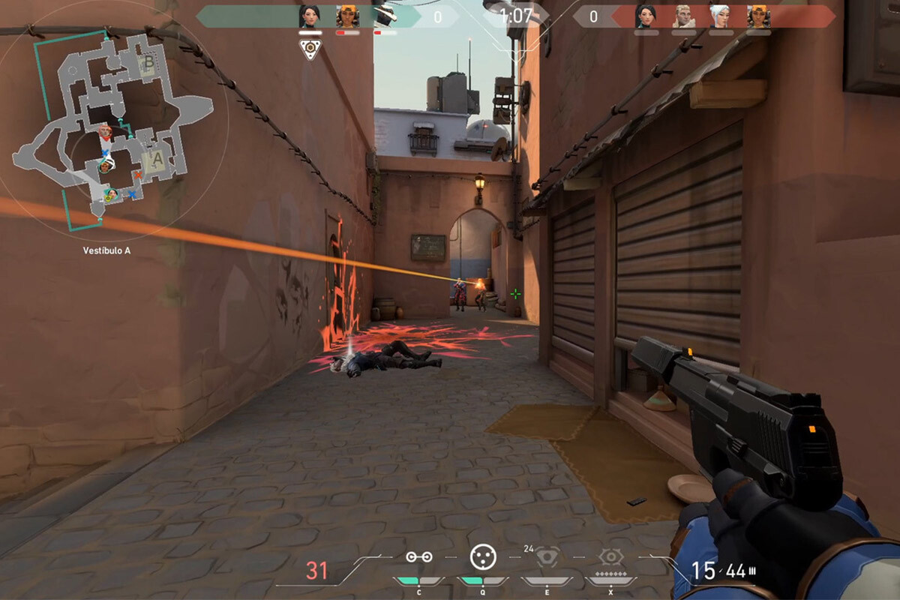

Valorant
Este juego, de la compañía Riot Games, ha sido el principal competidor de Counter Strike. Trajo muchas novedades al mundo de los Esports, y pisó muy fuerte en la escena de los Shooters Competitivos, y se llevó muchísima base de los jugadores de CSGO, ya que al no haber tenido actualizaciones desde hacía mucho tiempo, y Valorant salir en 2 de junio de 2020 (3 años antes que Counter Strike 2), fue una llamativa opción para los antiguos jugadores de CSGO que llevaban con su mismo sistema y mapas desde su lanzamiento.

Click en la imagen para ir a la página oficial de Valorant.
Trajo un sistema de agentes y habilidades, que superaba en versatilidad a las utilidades de Counter, roles para cada agente, cósmeticos mucho mejores visualmente a los de counter y lo que fue el detonante, todo sobre su base, el clásico PvP 5v5 de atacantes contra defensores para plantar una bomba (en Valorant la Spike) en rondas hasta que un equipo gane 12, con la novedad de posibilidad de empate si se llegase al 11-11.
Mecánicas
Las mécanicas como ya hemos mencionado antes, son iguales en su base pero vamos a explicar porqué los agentes y sus habilidades hacen Valorant especial. El tener una variedad de personajes que podemos usar y que cada uno cuente con su propio set de habilidades permite composiciones distintas para cada mapa y una cantidad de posiciones posibles para cada punto de plante, ya que en este juego hay mapas que cuentan con A, B y C. Por tanto tenemos CONTROLADORES, que como Viper, nos permiten tener un humo de veneno que merma a los enemigos que lo crucen y negando la visibilidad de ambos lados que puede cubrir más de medio mapa. Con los DUELISTAS como Jett podremos hacer un salto y dashear en el aire para entrar a un punto evadiendo trampas enemigas y conseguir muertes rápidas. Tenemos INICIADORES que su función principal es sacar información de dónde están los enemigos dentro y fuera del punto. Y por último, CENTINELAS que nos dejan cubrir un punto completo de la entrada de duelistas enemigos aún estando solos para dar tiempo al equipo a rotar a ese punto.

El sistema de disparos si que está un poco menos pulido pero aún así se siente divertido e innovador debido a que sus cosméticos le añaden sonidos y color a las balas, y psicológicamente se sienten distintas. Las armas también añaden juego ya que dependiendo de si tienen silenciador o no podrá verse de donde vienen los disparos a través de los propios humos, por lo que el enemigo podría responder.
La versatilidad es el punto fuerte de este juego, ya que las infinitas posibilidades que dan los agentes y mapas da una amplia variedad de jugadas increíbles que han sido una gozada en los eventos más importantes de Esports, se ha llevado a la comunidad de CS2 merecidamente.